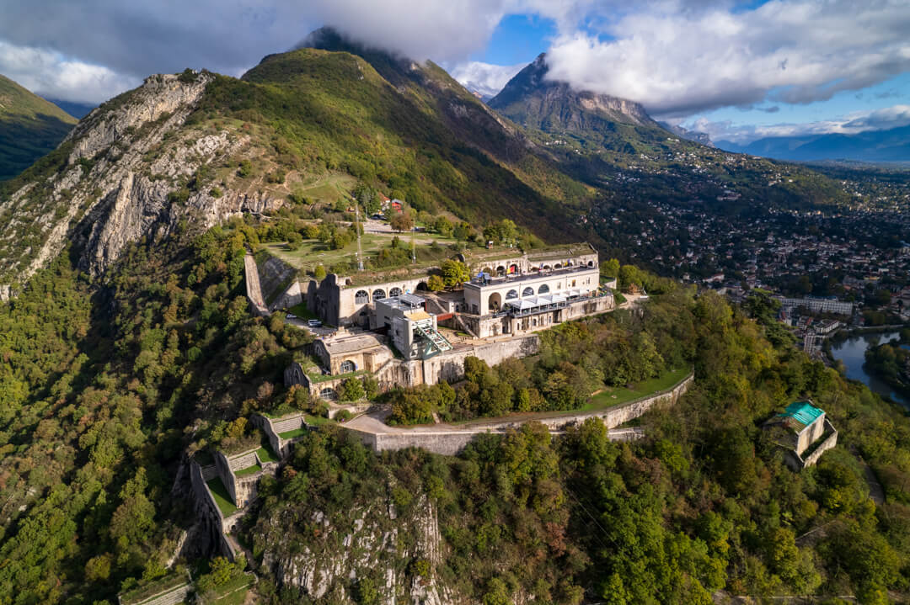

L'Union Locale des MJC de Grenoble fait vivre un chalet à l'Alpe du Grand Serre, ouvert aux associations, aux familles, aux collectivités et à tous ceux qui veulent vivre la montagne en collectif. Géré uniquement par des bénévoles — dans un esprit simple, convivial et solidaire.
À l'Alpe du Grand Serre (1368 m), aux portes de l'Oisans. Jusqu'à 25 places, 2 dortoirs, chambre double, cuisine équipée, en gestion libre.
Voir le chaletAssociations, collectivités, familles, jeunes, étudiants, camps de mineurs (agrément SDJES). Toute l'année, en semaine comme en week-end.
Nous contacterUne association d'éducation populaire, fondée sur la solidarité, le lien social et l'accès aux loisirs pour tous. Sans intermédiaire, sans but lucratif.
Découvrir l'assoSki, freeride, raquettes, randos, lacs, baignade au plan d'eau de La Morte. Le massif du Taillefer à 45 min de Grenoble.
Voir les activitésAcquis en 1963 par les MJC de Grenoble pour permettre aux enfants et aux jeunes de découvrir la montagne, notre chalet continue, plus de 60 ans plus tard, de faire vivre cet esprit de rencontre et d'éducation populaire.
Au-delà de l'hébergement, c'est un espace de partage où la vie collective, la coopération et l'accès aux loisirs pour tous occupent une place essentielle. Veillées, repas partagés, moments simples — un cadre chaleureux porté par les bénévoles et les associations qui le font vivre.
Visiter le chaletAdhésion symbolique de 10 € par groupe, 289 € la nuitée jusqu'à 17 personnes. Ouvert toute l'année aux associations, collectivités, familles élargies, camps et groupes constitués.
Nous contacter